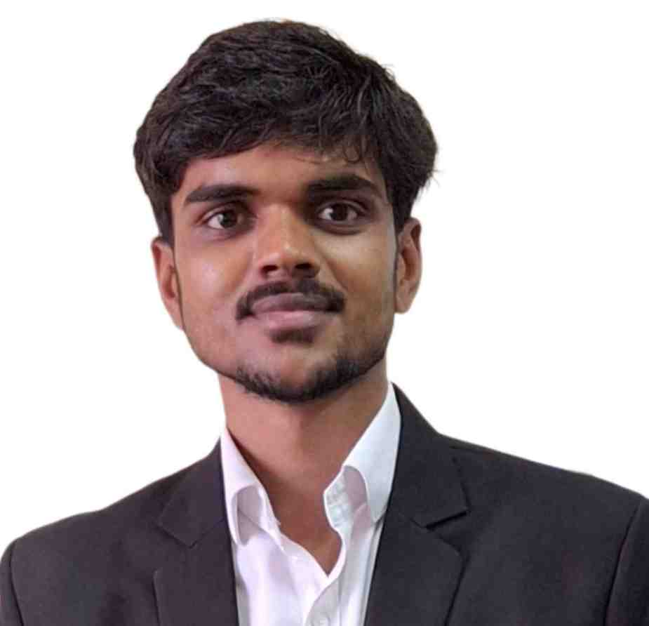

Biomedical Engineering graduate currently working as a QA Engineer at DRDO, on computer-vision and automated-detection systems. Background spans real-time image processing on embedded hardware, biosensor design, and hands-on calibration of life-critical medical equipment.

Real-time tumour detection system fusing infrared thermal imaging with MRI scan analysis on a GPU-enabled edge platform (Jetson Nano). Built a full pipeline — acquisition, preprocessing, enhancement, segmentation, and visualisation — to flag abnormal tumour regions from temperature variation and structural difference.
Portable optical biosensor for real-time creatinine detection, integrating quantum-dot nanotechnology with an embedded readout system. CdS/ZnS quantum dots conjugated with creatinine deiminase detect creatinine via fluorescence enhancement, read out on a custom Arduino-based device.
Designed a novel dual-anchorage mechanism for TMVR, targeting the major failure modes of existing systems — paravalvular leakage (PVL), LVOT obstruction, and device displacement — for safer minimally-invasive cardiac procedures.
The same underlying pipeline — image enhancement, segmentation, and object/region detection — transfers across very different feeds. At DRDO, that means working with computer-vision detection systems built for both diagnostic imaging and defense electro-optical applications.